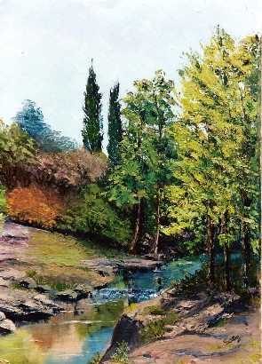
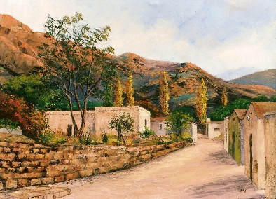
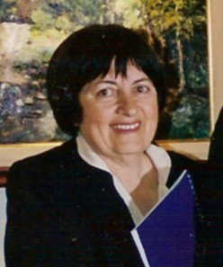
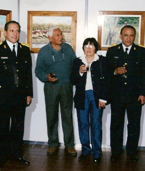

Tema de noviembre 06
Tras el paisaje...
ROSA SÁEZ, Unquillo, Provincia de Córdoba, Argentina.--
-------
 |
Tras el paisaje ha buscado la esencia de su ser, ése
que
Seguramente fue cuidando esos niños
que la vida le Ronda de papel A la ronda, ronda, ronda, Isabel no la tiene, |
Si no la tiene Isabel,
ni tampoco Maribel.
¿Quién tiene la prenda?
¿Quién la puede tener?
A la ronda, ronda, ronda,
a la ronda de papel.
Seguro que la tiene,
Mariquita o Anabel.
Mariquita no la tiene,
tampoco Anabel
La prenda se cayó
y el perrito de la casa,
¡Chocolate!, pensó...
A la ronda, ronda, ronda,
a la ronda de papel.
El perrito se la trajo,
Ya no la quiere tener.
Esa prenda no le sirve,
esa prenda de papel...
. . .
Esa docilidad a veces cansada y que se revela alzando
manos al viento que gritan: ¡Aquí estoy! ¡Aquí soy!
Tras las manos apresuradas al trabajo diario y el delantal de cocina cruzando
la cintura, puesto para
atender la gran familia que espera a la mujer constante, hija, hermana, madre
y abuela, el espíritu se agita
tras la cascarilla mundana, tratando de manifestarse.
Procura lo material con inteligencia práctica
y sin fatiga se entrega a las demandas cotidianas…
Demasiadas exigencias para una sola persona, que en abanico se prodiga sin mezquindades
y reclamos
y nadie se da cuenta que ella también requiere un lugar donde reposar
su cabeza, un cariño a tiempo,
una caricia cálida.
Entregó sus hojas, sus flores y semillas y hasta Aquí no copiará modelos existentes, no le
dirán, cómo hacer las cosas, ni siquiera osará
nadie a pedirle más nada y sin embargo, es en este lugar donde
más se entrega y donde más ofrece… |
 |
No habrá nombres ni apellidos hurgando sus
quehaceres, sino alguien, que eligió su obra, sólo
porque en una invisible conexión espiritual, le ha llegado y ese alguien
dice: no te separes de mí,
te admiraré y admirarán donde yo esté, te llevaré
conmigo mientras viva…
Así se ha quedado en muchos hogares y muchos
lugares…
Ella y su obra, los paisajes y personajes con quienes escapó a través
de su pintura…
 |
Nacida en Amstrong- Provincia de Santa Fe- Argentina-sus
primeros años transcurrieron en Noetinger- Provincia de Córdoba,
donde germinó su vocación por la pintura paisajista y
posteriormente vivió en Buenos Aires, radicándose en forma
definitiva en Unquillo, Provincia de Córdoba, Comenzó a pintar en 1993, con la ilusión de plasmar la belleza que admiraba en su entorno y Coco Rivolta de esta localidad, la inició en el arte, dándole clases durante unos meses. |
Luego continuó por sí misma y efectuó su primera exposición en San Isidro, Buenos Aires, donde vendió sus primeros cuadros y fue Néstor Verón quien la dirigió desde 1998 a la actualidad, en el Taller que Rosita ha instalado en su casa de Unquillo. Estuvo en España varios años, donde también efectuó importantes exposiciones.
|
 |
Un currículum detallado de la pintora y más
obras,
podrán verse en http://www.sierraschicas.com/artistas/saez.htm